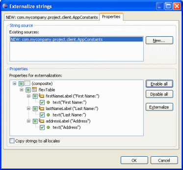
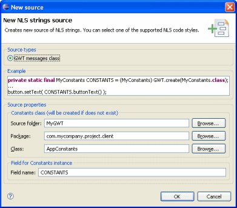
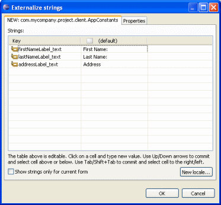
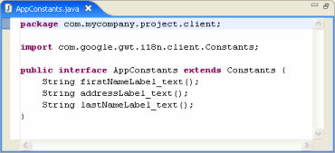
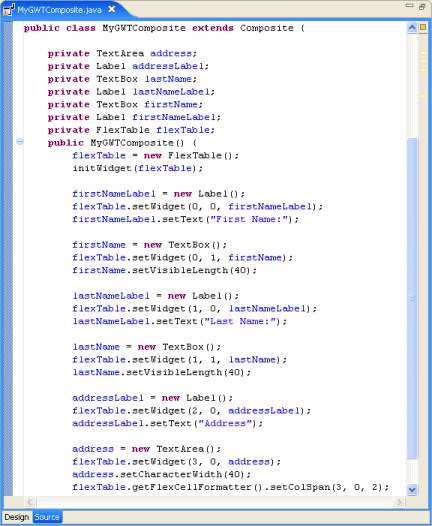
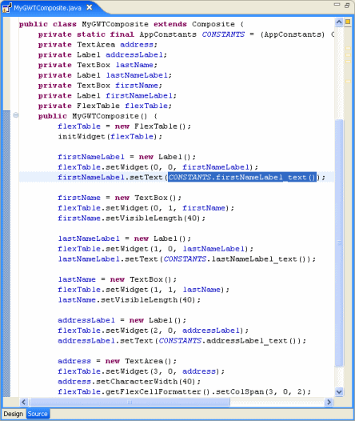
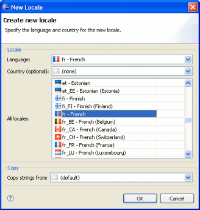
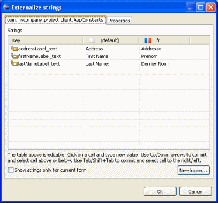
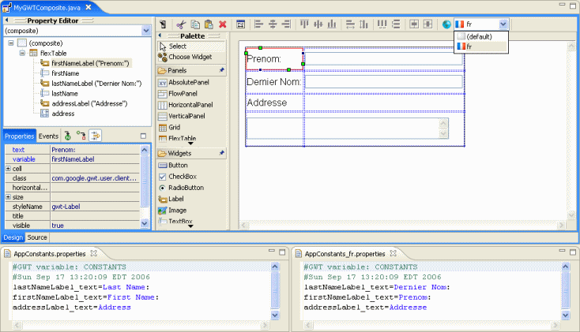

Easily extract hard
coded strings into resource files
- Click the Externalize String toolbar button to
extract strings
- Switch locales using the drop down list in the toolbar
- More details docs on Designer's internationalization
functions may be found in the
general Designer docs
|
Create multiple GWT messages classes
- Creates subclasses of
com.google.gwt.i18n.client.Constants
- Click the String Source > New button to create a
new Constants class
- Specify location and name of Constants class
- Specify field name to hold Constants class instance

 |
Extract strings to default locale
- All widgets with unextracted text components are shown
- Enable extraction for one or more widgets
- Click Externalize to extract strings
- Key names are automatically generated based on variable
name and string property type
- Keys and values may be edited in table

 |
| Hard coded
strings in original source replaced with method sends to
GWT constants file

 |
Create and manage multiple locales
- Click New Locale button to create a new
locale
- Select from the list of locales know to the
system or construct an arbitrary locale based on
language and country
- Optionally copy initial strings from another
locales

 |
Switch languages to see immediate changes in
design view
- Select the locale from the drop down locale list
- Text changes in design view are immediately
reflected in active locale's .property file
 |